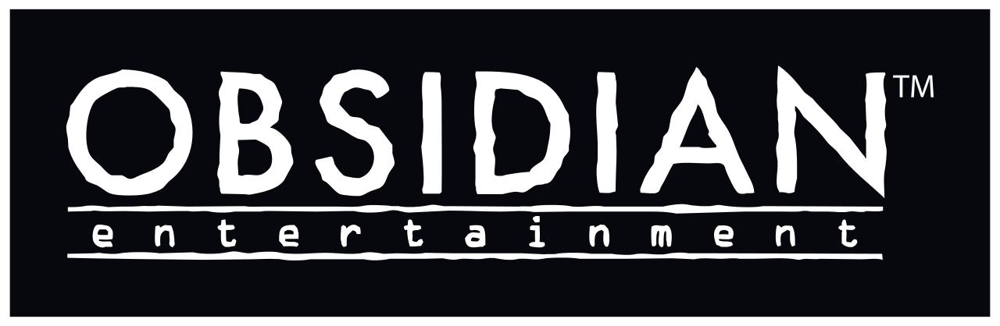
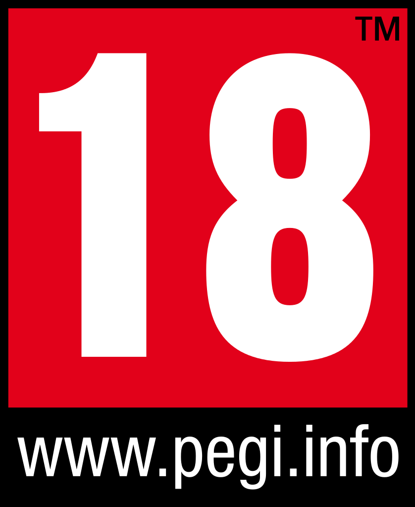
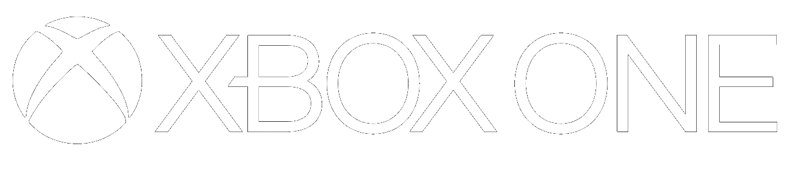
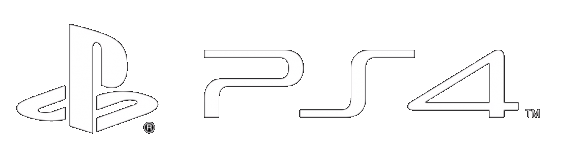
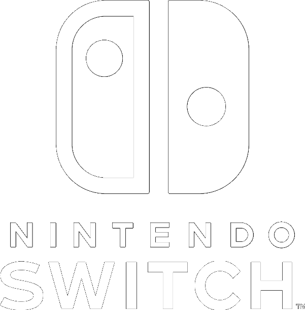
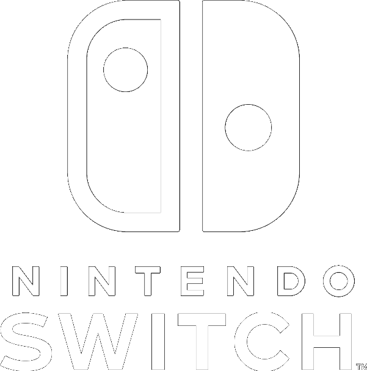

Decouvrez les DLC !


Perdu dans un vaisseau de colonisation à la dérive aux confins de la galaxie, vous vous réveillez des décennies plus tard que prévu en plein coeur d'une conspiration visant à détruire la colonie d'Halcyon.
Au fil de votre exploration dans les recoins les plus reculés de l'espace et des rencontres avec des factions se disputant le pouvoir, ce sera à vous de faire les choix qui détermineront l'avenir des habitants d'Halcyon. Dans l'équation parfaite de la colonie, vous êtes la variable imprévue.
Développeur
Obsidian Entertainment
Editeur
Private Division
Classification
PEGI 18
Date de sortie
25 Octobre 2019
Plateformes
  

The Outer Worlds est un RPG primé de science-fiction en solo à la première personne d'Obsidian Entertainment et de Private Division.